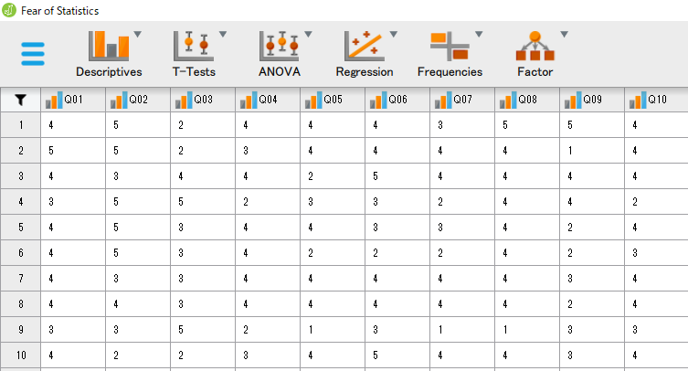

Next: データの記述 Up: JASPについて Previous: インストール
下は、JASPを起動した直後の画面を示したものである。
左上の三本線マーク（メニュー）をクリックすることで、データの読み込みや分析結果の保存、JASP の終了などの操作を行うことができる。
左上のメニューをクリックしてみよう。 一番左の列には、[Open] や [Save] など、データファイルを開いたり保存したりするためのメニューが並んでいる。 開いたデータファイルを閉じるときは、[Close] をクリックする。
一番上にある [Open] を選択すると、[Recent Files]、[Computer]、[OSF]、[Data Library] の4つのメニューが現れる。
最近使用したデータファイルがあれば、ここに表示される。
Excelなどで作成しコンピュータ内に保存したデータファイルをブラウズして開く。
もし「ダウンロード」フォルダにデータが保存されているのであれば、[Brows] から コンピュータ内のフォルダ [Downloads] を選択することで、そこに含まれるデータファイルの一覧が表示される。
ここでは "cor.csv" が含まれており、これを選択して [開く] をクリックすれば、データが表示される3。
Open Science Framework (OSF) 4 に登録していれば、研究者が公開したデータをウェブ上から読み込むことができる。 研究結果の再現性を担保し研究の透明性を高めるために、分析に用いた生データを登録する動きが一般的になりつつある。
JASPにあらかじめ用意されている練習用のデータファイルを開くことができる。 分析方法に応じて様々なデータが用意されている。
なお、Data Library で上位のフォルダに戻るには [Categories] をクリックする。
今、[Data Library] の [1. Descriptives] をクリックしてみよう。 先頭に "Fear of Statistics" というデータセットがある。 2つデータファイルのアイコンが並んでいるが、左が .jasp 形式、右が .csv 形式のファイルとなっている。
ここでは、とりあえず右側のデータ（Fear of Statistics.csv）をダブルクリックしてみよう。 タブが [Common] に切り替わり、"Q01" から "Q23" まで23変数からなるデータが表示される。

これは、「SPSS不安尺度」なるものを2,571名の学生に実施して得られた（とされる）データセットである[2]。
具体的な項目内容の例は以下の通り。（私家訳版）
とりあえずデータの読み込みに成功したら、このセッションを一度閉じてみよう。
もう一度左上のメニューをクリックして [Close] をクリックすると、そのデータを用いたセッションが閉じられる。 （もし何か分析を行っていれば結果を保存するか聞かれるが、データを開いただけだと何も確認はされない。）
Taichi Okumura